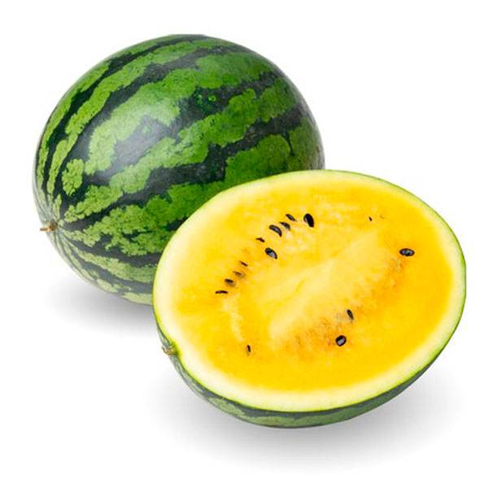

Что такое желтый арбуз?
Желтый арбуз — это необычная разновидность арбуза, у которого мякоть имеет ярко-желтый цвет. Он не только красив, но и очень вкусен, с сладким и сочным вкусом, который во многом схож с традиционным красным арбузом.
Характеристики
- Содержит много витамина C
- Обогащен антиоксидантами
- Способствует гидратации организма
- Низкокалорийный продукт
Как выбрать хороший желтый арбуз?
При выборе желтого арбуза следует обращать внимание на его форму, цвет корки и звук. Хороший арбуз будет симметричным, с яркой коркой и при постукивании издавать глухой звук.